世界の葉巻ニュース 特集
特集 — 小ロットの世界
きっかけは、Xで流れてきた一枚の写真でした。2026年11月16日、愛好家のアカウント（@johnnyblacksad）が投稿したのは、Nomad Drop Dead Gorgeous: Platinum Blonde という葉巻です。名前を頼りにメーカーの発表をたどると、驚くべき一文がありました。「もともと Ezra Zion の通常リリースとして予定されていた。しかし、作れたのは435本のマイクロバッチだけだった」。
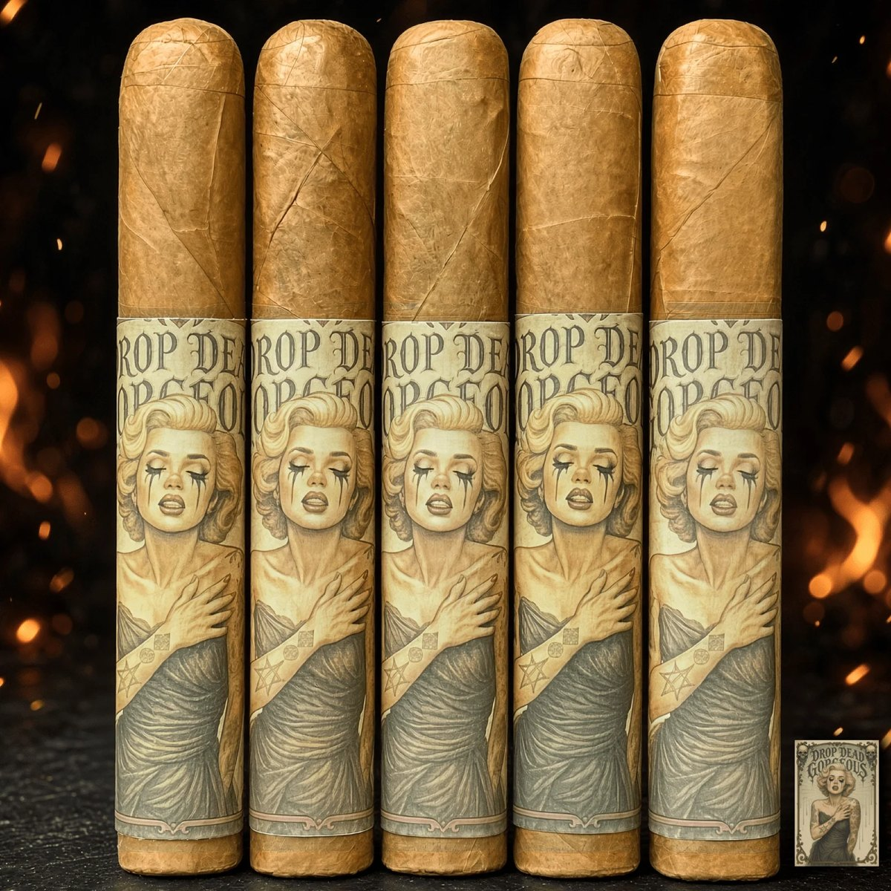
435本。世界中の愛好家を相手にする市場で、1回のリリースが数百本しかない。しかも価格は1本 $12.00（約¥1,914）と、ごく普通の値付けです。サイズは 5.75×54 のトロ・プレンサード（ボックスプレス）。ラッパーは13年熟成のコネチカット葉で、バインダーとフィラーは「企業秘密」。使われた葉は4〜13年熟成とされます。公式ストアでは5パック $59.95（約¥9,562）で出ましたが、公式ストア、Sir Louis Cigars、70Cigars のどこもすでに完売です。
調べ始めると、これは例外ではありませんでした。「通常リリースの予定が、葉が足りなくて数百本だけになった」――そんな成り行きのマイクロバッチを、ほぼ毎月のように生み出すメーカーがあります。限定といえば数万本規模が普通の業界で、数百本という桁はどこから生まれるのか。本特集では、メーカーが総生産数を公表している極小ロットの葉巻だけを集め、本数の少ない順に並べてみました。
本特集に載せるのは、メーカーが総生産数を明示したリリースに限ります。生産数はメーカーの告知文・公式商品ページと、業界誌（Halfwheel、Cigar Coop、Cigar Aficionado 等）の報道に基づくものを原則とし、小売店のページの表記しかないものは「小売店表記」と明記しました。生産数が公表されていない限定品は、末尾の章に分けて「未公表」と明記しています。推測で本数を書くことはしていません。価格の円換算は $1＝¥159.5、£1＝¥210.5（2026年11月18日時点の調査レート）で、送料・関税・葉巻税を含みません。在庫状況は2026年11月18日の確認時点のものです。
◆ 一、本数の少ない順 ― 公表数ランキング
まずは結論から。メーカー公表（またはそれに準じる公表）ベースで、総生産数が確認できた極小ロットを少ない順に並べます。上位はほぼ、ひとつのメーカーが占めました。
| 銘柄 | 総生産数 | サイズ・発売 | 備考 |
|---|---|---|---|
1492 コネチカット・フエルテ L.E.（Warped） | 250本 | ロブスト 5×50 | 小売店表記のみで、桁が極端に小さいため要再確認。本特集では参考順位として扱います |
| カーメル・コーン 2021 Ltd.（Ezra Zion） 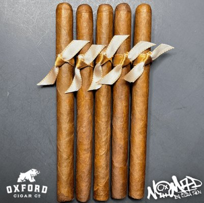 | 275本 | ランセロ 7×38／2021年 | メーカー発表ベース（小売店転記）。リボンを結んだデザート系の一本 |
| パンプキン・スパイス・ミルクシェイク（Nomad） 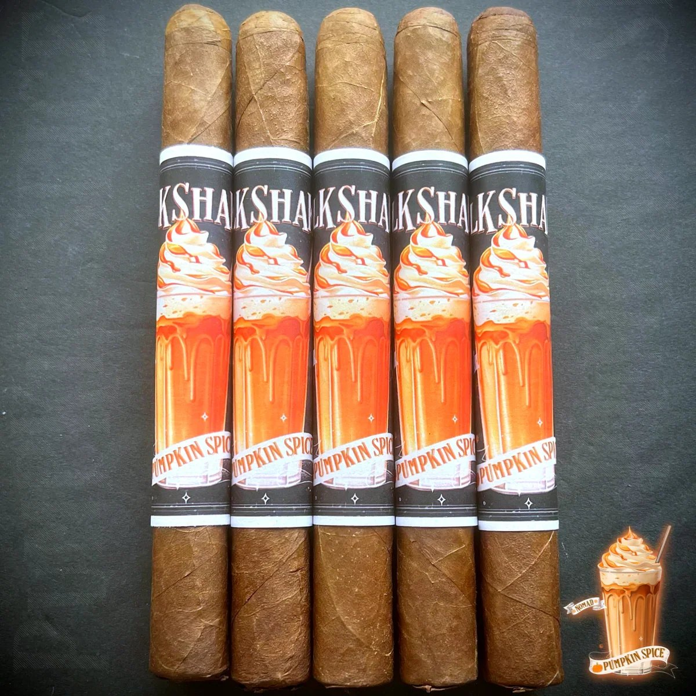 | 370本 | コロナ・ゴルダ 6.25×46／2025年秋 | メーカー自身が「通常リリース予定が葉不足で370本のマイクロバッチになった」と説明した一本。本特集の起点と同じ成り行きです |
| ピーナッツバター・カップス キングサイズ（Nomad） | 390本 | トロ 6×52／2025年 | メーカー発表。写真は確認できる公式・小売の製品写真が得られませんでした |
| ザ・レイヴン MystiQ（Ezra Zion） 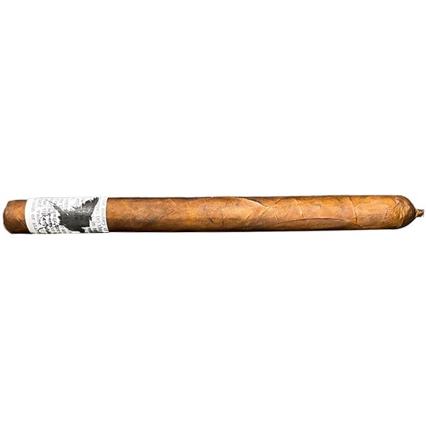 | 410本 | ランセロ 7×38 | メーカー発表ベース（小売店転記）。カラスを冠した「レイヴン」シリーズの一作 |
| ドロップ・デッド・ゴージャス：プラチナ・ブロンド（Nomad） | 435本 | トロ・プレンサード 5.75×54／2026年秋 | 本特集の起点。1本 $12.00（約¥1,914）。公式ストアほか全店完売 |
| スモークド・ターキー・レッグ（Nomad） 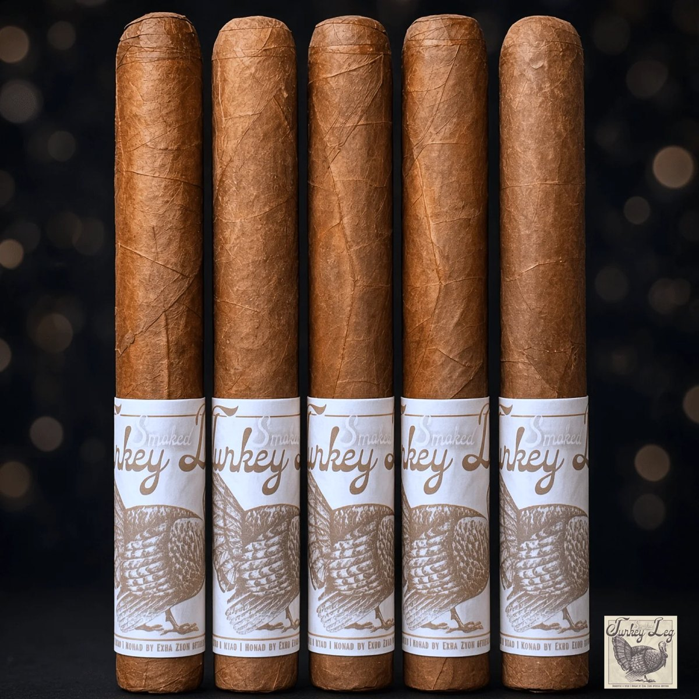 | 455本 | 感謝祭限定／2026年11月 | メーカー発表。こちらも「通常リリース予定が葉不足で455本に」。公式ストア $59.95〜$219.95（約¥9,562〜35,082）、完売 |
| パンプキン・スパイス・ムース 2026 Ltd.（Nomad） 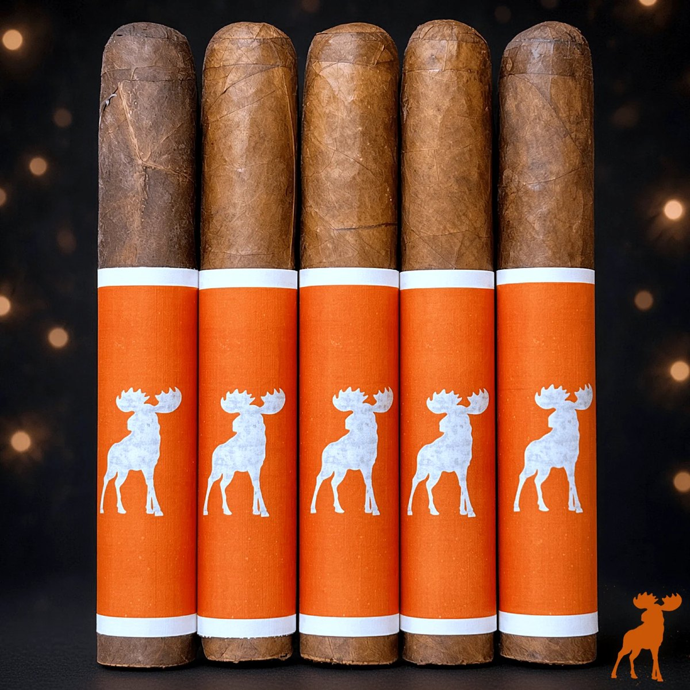 | 475本 | トロ／2026年秋 | メーカー発表。人気の秋物2ブレンドを掛け合わせた実験作 |
| ムエストラ・デ・サカ ユニコーン（Dunbarton） 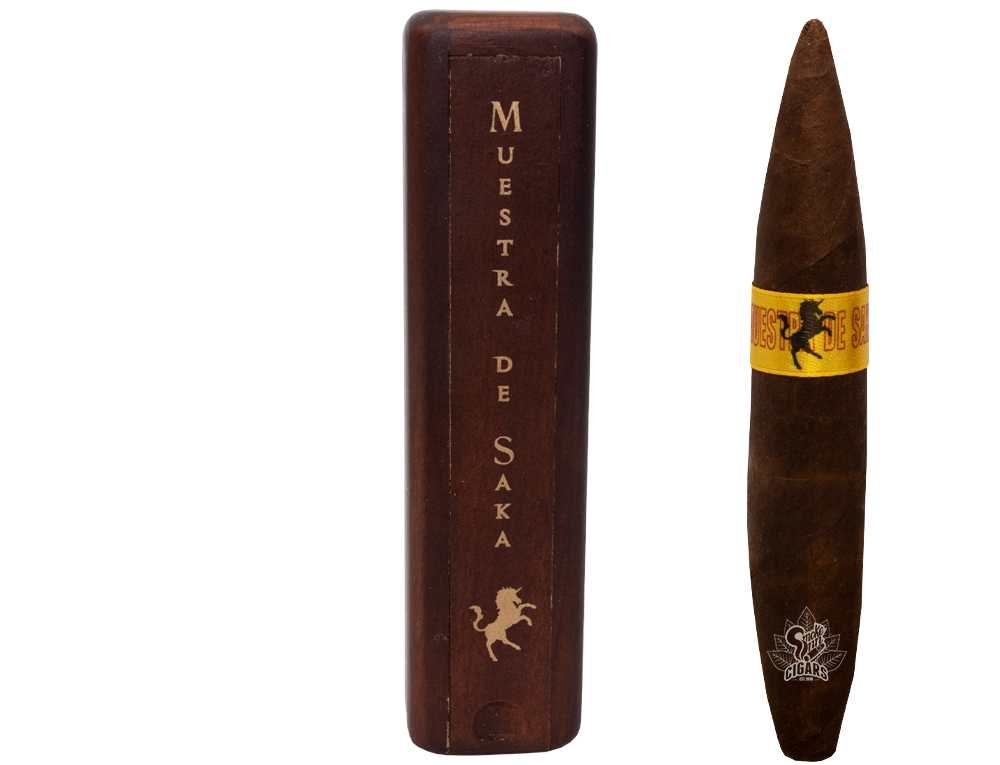 | 1,000本製造 958本のみ販売 | ダブル・ペルフェクト 6.25×60／2018年1月 | 1本 $100（約¥15,950）。葉6,000ポンドから約1%だけを選別し、ホヤ・デ・ニカラグアの一組の巻き手が全数を製造した象徴作。詳しくは第五章で |
上位8件のうち7件が Ezra Zion／Nomad です。しかも顔ぶれは「パンプキン・スパイス」だの「スモークド・ターキー・レッグ」だの、デザートや料理の名前ばかり。この一軒が、なぜこれほど小さいロットを連発できるのか。次の章で、その仕組みを見ます。
◆ 二、小ロット連発の本家 ― Ezra Zion／Nomad
Ezra Zion と、その傘下の Nomad by Ezra Zion は、現在のマイクロバッチの中心地です。やり方は一貫しています。ブレンドができたら、まず自分たちで吸い、量が確保できれば通常リリース、できなければ「作れた分だけ」をマイクロバッチとして出す。生産数は告知文で毎回、数字で明示されます。プラチナ・ブロンドの「435」、ミルクシェイクの「370」、ターキー・レッグの「455」――いずれもメーカー自身の言葉です。
名前の付け方も独特です。デザートや料理、季節の行事を冠したブレンドが並び、秋にはパンプキン・スパイス系、感謝祭にはターキー系、といった具合に「季節の味」を葉巻に写し取るのがこの家の文法です。販売は公式ストアとごく一部の米国の小売に限られ、発売直後に完売するのが常態になっています。ランキング外にも、スウィープ・ザ・レッグ 2021 LTD（570本）、18イヤー・アイリッシュ・ウイスキー（640本）、フライドチキン・シークレット・レシピ LTD（655本）、ピーカン・パイ 2026 LTD（720本、1本 $14.00＝約¥2,233〜）、オール・マイ・エックスズ ― ザ・ロスト・ブレンド（890本、「失われた原典ブレンド」の一回限りの復刻）と、数百本台の作例が続きます。古くは2013年の Nomad エステリ LE ロット1386（307箱×12本＝3,684本）という、箱数まで刻んだ限定もありました。
ただし、日本の読者にとっての壁は高いままです。これらの小ロットは発売元が公式ストアと米国のブティック系小売に限られ、日本へ発送できる店での取り扱いは、今回の調査では確認できませんでした。ピーカン・パイ 2026 LTD は Oak Glen Tobacconist で販売中と表示されていますが、同店の日本発送は未確認です。本特集では、この一群をおすすめとしては扱いません。眺めて楽しむ「世界の小ロット文化」の標本として紹介します。
◆ 三、小ロット限定の代名詞 ― Viaje
「小ロット限定」という商法そのものをブランドの骨格にしたのが、アンドレ・ファーカス の Viaje です。全ラインが季節限定・小ロット前提で、中でも実験ラインの ホワイト・ラベル・プロジェクト（WLP） は、将来の製品のテストや、通常なら発売されないブレンドの受け皿として、「数百箱」単位で出されては数日で消えます。
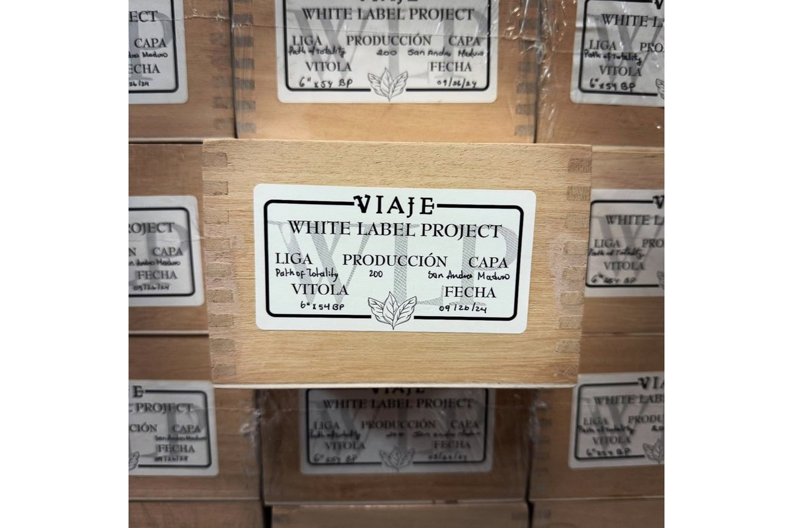
WLP の箱ラベルには、生産数がそのまま印刷・手書きされます。2024年の皆既日食記念 パス・オブ・トータリティ BP（6×54）は200箱×30本＝6,000本。同年の ダーク・マター BP、ブランダーバス も各200箱でした。別ラインの サーカ '45 リミテッド・エディション レセルバ（2023年、AGANORSA製）はサイズ別に300箱×25本＝7,500本。クラシックでは、フリオーサ インペラトール（2016年）が100箱×51本＝5,100本、イベント限定の ゾンビ（2011年）が100箱×20本＝2,000本（1本 $10.50＝約¥1,675）でした。Ezra Zion の「数百本」と比べれば箱単位の世界ですが、「本数を最初から宣言して売り切る」という作法を業界に広めたのは、この家の功績です。
◆ 四、スモールバッチ工場 ― Black Label Trading Co.／Black Works Studio
ジェームズ＆アンジェラ・ブラウン の自社工場ファブリカ・オベハ・ネグラは、「スモールバッチ工場」そのものを名乗る場所です。看板の Black Label Trading Co.（BLTC）と、実験色の強い Black Works Studio（BLK WKS）の二枚看板で、限定品は箱数で管理されます。
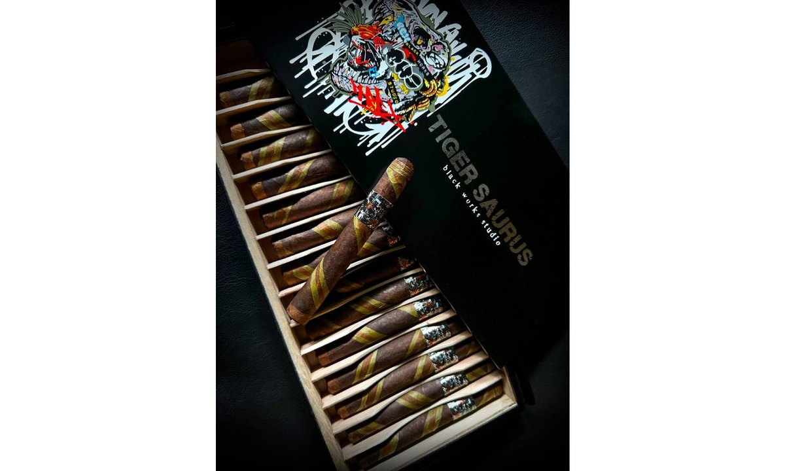
2025年9月の BLK WKS タイガーザウルス（5.5×48）は850箱×15本＝12,750本（米国800箱＋欧州50箱、MSRP 1本 $19＝約¥3,031）。BLTC の2025年復刻 スーパー・デラックス はサイズ別に750箱（2020年の初版は880箱）、モーフィン 10イヤー・アニバーサリー はサイズ別700箱。BLK WKS の10周年サンプラー BOOMBOX（2025年4月）は1,000箱×21本＝21,000本でした。本数の桁は Ezra Zion より一桁大きいものの、「工場の規模そのものが小さい」ことが限定の理由になっている点で、同じ小ロットの世界に属します。なお、この工場で他社ブランド向けに作られた アポステート デスマスク（250箱×20本＝5,000本、2026年10月）という作例もあり、小規模工場の生産枠そのものがブティック各社の奪い合いになっている様子がうかがえます。
◆ 五、象徴作 ― Muestra de Saka「ユニコーン」
第10弾で取り上げた スティーブ・サカ の実験ライン ムエストラ・デ・サカ は、「工場でブレンダーが自分のために巻く試作（ムエストラ）」を商品化したシリーズです。各ビトラが個別のコフィン（棺型の木箱）に入る凝った仕様で、生産数は多くが公表されません。その中で、ユニコーンだけは本数まで語られました。
2018年1月の ユニコーン は、1,000本が製造され、販売されたのは958本だけ。残りは選別で弾かれた計算です。原料の葉6,000ポンド（約2.7トン）から使われたのは約1%だけ。製造はホヤ・デ・ニカラグアの一組の巻き手が全数を担当し、価格は1本 $100（約¥15,950）に設定されました。「数百本」の連発とは別の意味で、これは小ロットの思想を一本に凝縮した象徴作です。シリーズではほかに、ザ・ビウィッチド（2022年、初回2,500箱と報道）、3本編みのクレブラをコフィンに収めた レングア・デ・スエグラ（2026年10月出荷予定、SRP $60＝約¥9,570、生産数は未公表）などがあります。そして次章の「今も買える一本」は、このシリーズの長兄です。
◆ 六、発掘と小工場 ― Lost & Found と Warped
小ロットには「見つけたから少ない」という成り立ちもあります。ロバート・コールドウェル らの Lost & Found は、工場の熟成室に眠っていた他社向け・企画倒れの葉巻を買い取り、別名で売る「発掘系」プロジェクトとして2014年に始まりました（当初名 Impromptu）。初期作は数百バンドル単位が普通で、ブラック（2017年、約2,700本）、スウェディッシュ・デライト（同、約4,200本）などが米国向けには数百本しか回らない形で出ています。現在の形では、22ミニッツ・トゥ・ミッドナイト がサイズ別200箱を年2回リリースする方式。チャリティ作 ギヴ・ア・F*ck 2026 は600バンドル×10本＝6,000本（MSRP 1本 $12.50＝約¥1,994）で、2026年7月24日に出荷されました。
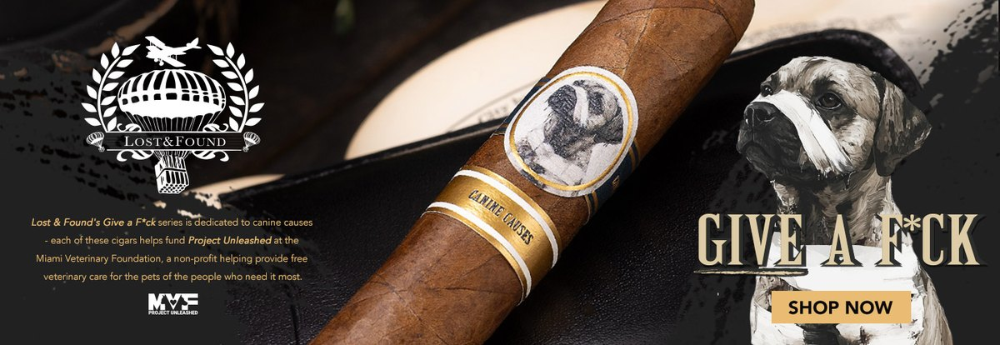
もうひとつ、小ロットが「物理的な上限」から生まれる例が Warped です。カイル・ゲリス の Warped は、マイアミのエル・タイタン・デ・ブロンズのような小規模工場への委託が前提で、名物の ラ・コルメナ は工場が1日に約100本しか巻けないことが知られています。2025年の エル・オソ・ブランコ は500箱＝5,000本（1本 $23＝約¥3,669）、対の エル・オソ・パパ は1,500箱＝15,000本。ラ・コルメナ 10周年 アマード No.50（2024年）は2,000箱＝20,000本でした。ランキング1位の 1492 コネチカット・フエルテ L.E.「250本」もこの家の作ですが、小売店表記のみのため、本特集では断定を避けています。
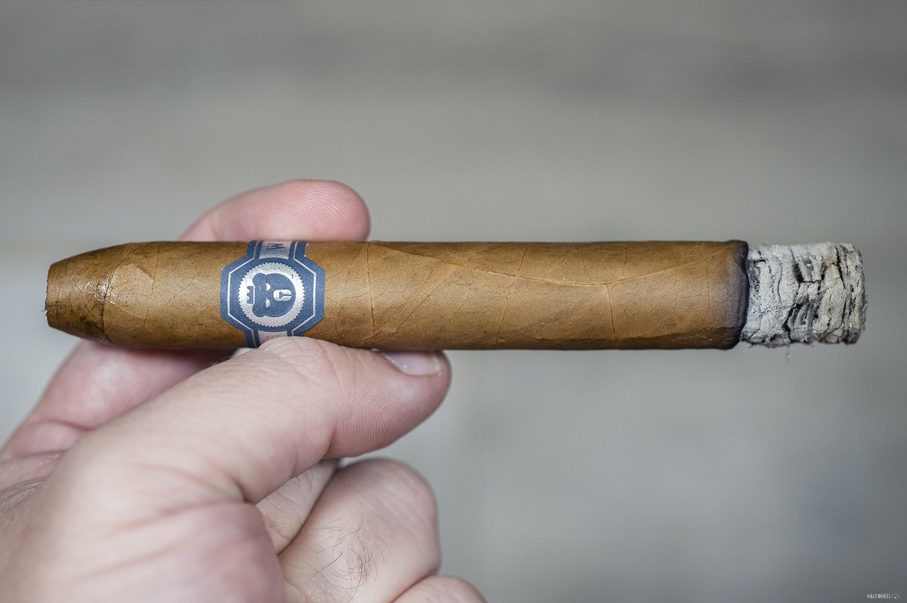
◆ 七、桁違いの「限定」 ― 比較のために
公平のために書いておくと、「限定」の看板を掲げる葉巻のすべてが小ロットなわけではありません。限定の王道、Tatuaje のモンスター・シリーズの近年の Redux は、ザ・マミー Redux 5（2025年9月）が5,000箱×13本＝65,000本（1本 $13＝約¥2,074）。シリーズ最終作の ザ・ジェイソン Redux 6（2026年10月）も同規模です。初期のモンスター（2008年〜）は番号付き666箱（13本入り）＝8,658本＋通常箱という構成で、それでも本特集のランキングとは桁が違います。また、年1回限定のクラシックとして、Illusione の シングラーレ（2010〜2019年）は「単一農園の葉の収量で決まる500〜1,500箱」が公式コンセプトでした（2010年のファントムは1,000箱×15本＝15,000本）。「限定」という言葉の幅は広く、本数を確認して初めて、その希少さの実態が見えてきます。
◆ 八、今も買える小ロット ― 日本へ発送できる店で、在庫を確認できた2件
数百本の世界は、ほとんどが「眺めるだけ」のものです。しかし今回の調査で、日本へ発送できる店に在庫が残っている小ロットが2件だけ確認できました。どちらも「数百本」ではなく箱単位の限定ですが、いま日本から実際に注文できるという意味で、現実的な入口です（在庫・価格は2026年11月18日の確認時点。送料・関税・葉巻税は含みません）。
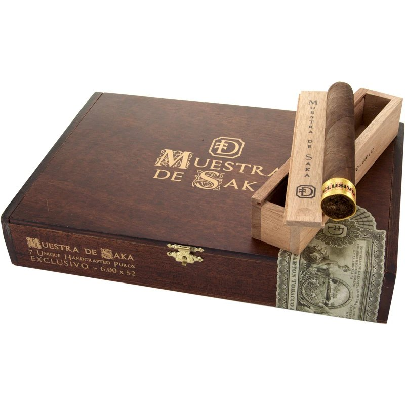
第五章のユニコーンの長兄にあたる、シリーズ最初の作（2017年3月〜）。6×52 トロで、ニカラグアの4産地（ハラパ、コンデガ、オメテペ、エステリ）のフィラーを使うオール・ニカラグア・ブレンドです。小売店の表記では「1,500箱限り」。Atlantic Cigar は国際注文の受付対象国に日本を明示している店で、2026年11月18日時点で In Stock を確認しました。価格は7本入りコフィン箱が $139.83（約¥22,303、MSRP $164.50 から値引き）、バラが $21.15（約¥3,373）。Atlantic Cigar の商品ページを見る
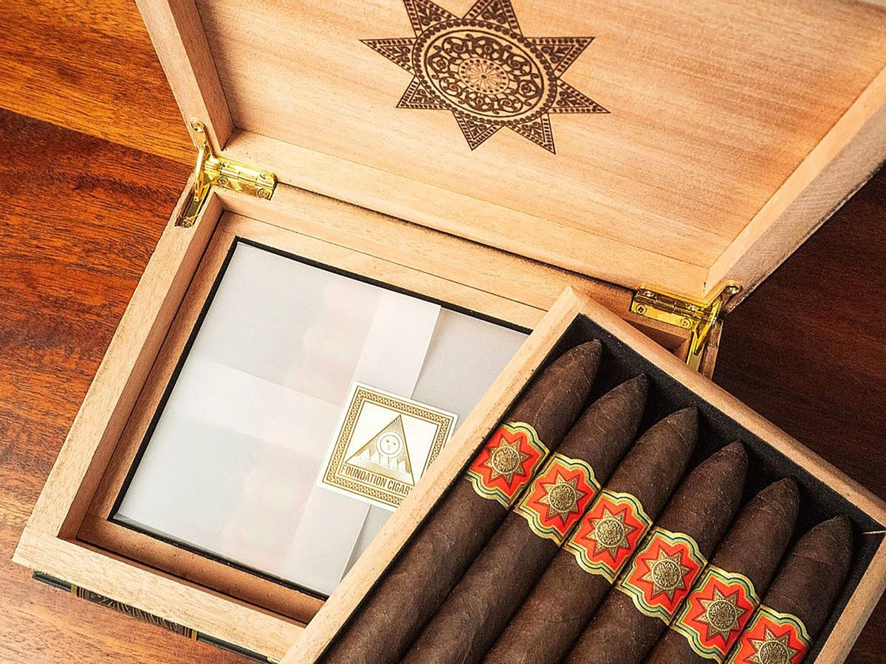
第11弾の主人公 ニコラス・メリーロ が、エチオピアの騎士号（Knight Commander）を記念して作る年次限定（2023年〜、毎年秋）。6.75×52 ペルフェクトで、巻き上げ後に15か月シダーで熟成させ、卸売純益の100%を Royal Ethiopian Trust へ寄付するチャリティ作でもあります。生産数は年間700箱（2023・2024年）、2025年は750箱（各12本入り＝8,400〜9,000本）。英国の Cgars Ltd（日本発送可）で2026年11月18日時点で In Stock を確認しました。価格はバラ £45（約¥9,473）、12本箱 £538（約¥113,249）。米国の参考価格は MSRP 1本 $40（約¥6,380）です。Cgars Ltd の商品ページを見る
◆ 九、生産数が公表されていない限定 ― 「未公表」と明記する
最後に、限定であることは確かでも、メーカーが生産数を出していないものたちを分けておきます。本数が分からない以上、希少さの順位には入れられません。
| 銘柄 | 生産数 | サイズ・発売 | 備考 |
|---|---|---|---|
| Room101 ナマクビ Ltd 2025（チンゴン） 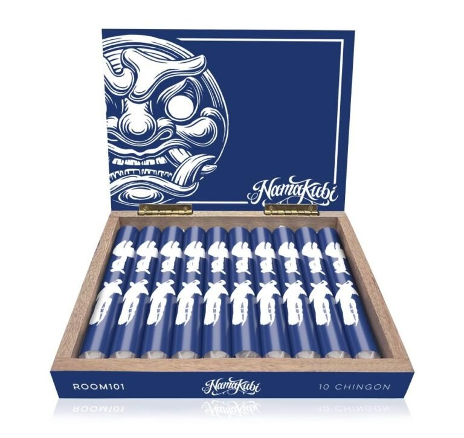 | 未公表 | ペルフェクト 6.5×50／2025年10月 | Halfwheel が「生産数は開示されなかった」と明記。1本 $24.99（約¥3,986）。タバカレラ・ウィリアム・ベンチュラ製 |
| Room101 ジョニー・トバッコノート 10周年 | 未公表 | トロ 6×52／2025年9月 | Halfwheel 明記で「Undisclosed」。1本 $11.99（約¥1,912）。製造工場（AJ Fernandez）の火災（2025年3月）で出荷が大幅に遅れ、結果的に希少性が上がった一本 |
| BLK WKS ブーンドック（2026年復刻） | 未公表 | 3サイズ／2026年 | 2019年以来の本格復刻。1本 $12.50〜13.50（約¥1,994〜2,153） |
| Viaje WLP モフォンゴ | 未公表 | トロ 6×52 | WLP は「数百箱」とだけ語られることが多いライン。25本入り箱 MSRP $242（約¥38,599） |
このほか、Muestra de Saka の アンストールン・ヴェイラー（2020年、1本 $17.95＝約¥2,863で発売）や2026年の新作も生産数は未公表です。サカのように「本数を出さない」こと自体を姿勢とする作り手もいます。
◆ 締め ― 数百本という単位
大手メーカーの工場では、1日に何万本という葉巻が巻かれます。その世界で「435本」は、1時間分の生産にも満たない量です。けれど小ロットの葉巻は、その少なさを欠陥ではなく設計として掲げています。葉が足りないから数百本になった成り行きもあれば、6,000ポンドの葉から1%だけを選んだ贅沢もあり、1日100本しか巻けない工場の物理も、熟成室で見つけた偶然もあります。「何本作られたか」を知ることは、その葉巻が生まれた事情を知ることです。次に限定品を見かけたら、値段の前に、まず本数を探してみてください。数字がある葉巻には、だいたい物語があります。